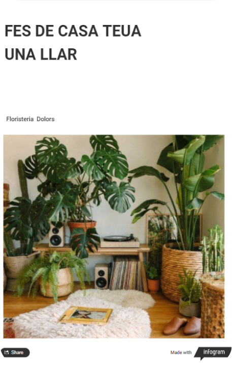

En aquesta activitat havíem d’elaborar un contingut interactiu per incloure a una fictícia pàgina web d’una marca o empresa, i que es pogués mirar de viralitzar a través de les xarxes socials d’aquesta. Com a inspiració teníem l’exemple de Spotify Wrapped, un recull dinàmic i atractiu de les cançons més escoltades per l’usuari durant l’any. La meua idea va ser que l’empresa fos una floristeria i mostrar la fiabilitat a partir dels clients fixos, així com els tipus de plantes que més es venen. Aquest en va ser el resultat. Clicant a la imatge s'obrirà una pestanya on visualitzar el contingut.
